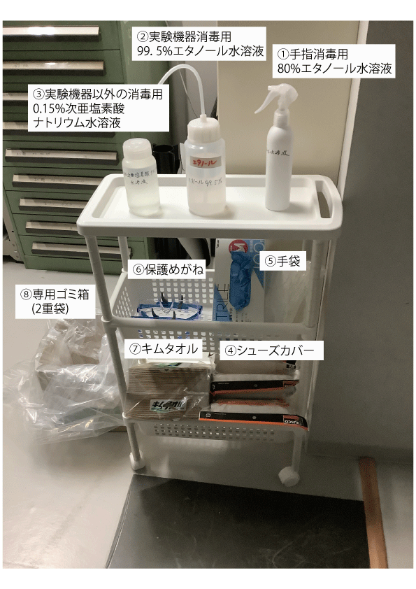

| |
入室時
- あらかじめ手指を外のトイレで石鹸洗いする．
- 手指を，写真のラック最上段に置いてある「①80%エタノール水溶液」を用いて消毒する．
消毒方法（サラヤ株式会社の医療従事者向けサイト）
※エタノールは入手困難なため無駄遣いしないこと．
- 各自に配布した，サンダル及びフェイスシールドを持参して使用する．（当面は別途指示する）
- 実験に支障がない場合は，「⑤手袋」を着用する．（無意識の体液の拡散を予防するため）
在室中
- 常にマスクを着用し，室内での会話は必要最低限にとどめる．
- 実験室にある電話は使用禁止．
- 会話や電話が必要な場合は，風通しのよい屋外に行って行う．会話は2メートル以上の間隔を空けて基本的に横向きで行う．
- 咳やくしゃみが出そうなときは，出来る限り室外に出る．
退室時
- 実験室使用記録を入力する （レベル1以上の場合）
．
- 気道分泌液（唾，鼻水やその飛沫と考えてください）や体液が付着した可能性がある使用機器を，「①80%エタノール水溶液」を用いて手指消毒した後に「⑤手袋」を着用して消毒する．
- 除震台，実験機器，などについては，「②99.5%エタノール水溶液」と「⑦キムタオル」を用いて，一方向に拭いて消毒する．※実験機器の消毒は可能な範囲でよい．光学素子や機器に損傷を与えないよう十分注意し，分からない場合は教員に確認すること．
- 実験機器以外の，電気・エアコンスイッチ，机，キーボード，マウス等については，「③0.15%次亜塩素酸ナトリウム水溶液」を「⑦キムタオル」に含ませて，一方向に拭いて消毒する．
- 最後に，フェイスシールド，サンダルの底，部屋の内側・外側ドアノブ，入口の電気スイッチを，実験機器以外の方法で消毒し，使用後のキムタオル，手袋を「⑧専用ゴミ箱」に捨てる．
- 退室する．

|